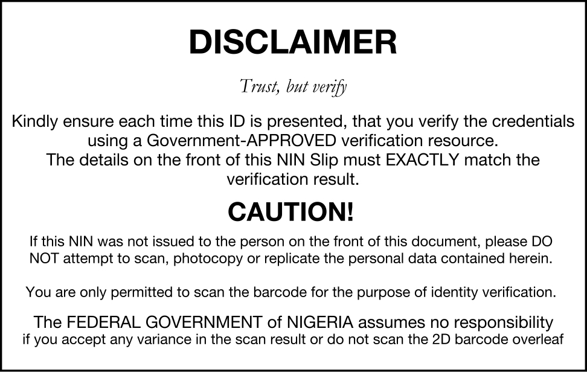

UNICAF SCHOLARSHIP 2023/2024: UNLEASHING YOUR EDUCATIONAL DREAMS
PREFACE
The Unicaf Scholarship Program is a lamp of stopgap for innumerous individualities around the world who dream of pursuing advanced education. Unicaf, short for" University of Nicosia and Cambridge Education through Unicaf," is an association devoted to making quality education accessible to all. In this composition, we will claw into the details of the Unicaf Scholarship, understanding what it is, its significance, and how you can profit from this remarkable occasion.
WHAT IS THE UNICAF SCHOLARSHIP PROGRAM?
Unicaf Scholarship is a lifeline for scholars looking to achieve their academic pretensions without the burden of extravagant education freights. It's a unique action that brings together prestigious universities and institutions to give affordable education. Unicaf mates with institutions similar as the University of Nicosia, the University of South Wales, and more, offering a range of programs from undergraduate to postgraduate situations.
THE SIGNIFICANCE OF UNICAF SCHOLARSHIP:
Accessible Quality Education:
Unicaf's primary thing is to make quality education accessible to a wider followership. It situations the playing field by enabling individualities who might not have the fiscal means to attend prestigious universities to pierce world- class education.
Diverse Course Immolations:
The Unicaf Scholarship covers a broad diapason of academic disciplines, from business and healthcare to humanities and social lores. This diversity ensures that there is a program for nearly every field.
Global Recognition:
Partnering with reputed institutions ensures that your degree carries weight in the professional world. It opens doors to a global network of alumni and openings.
Financial Relief:
The education significantly reduces the fiscal burden on scholars, making it a cost-effective way to attain a degree from estimable institutions.
HOW TO PROFIT FROM THE UNICAF SCHOLARSHIP:
Exploration and Choose a Program:
Start by probing the programs offered under the Unicaf Scholarship. Find the bone that aligns with your career bournes and interests.
Check Eligibility:
Insure you meet the education's eligibility criteria. Generally, Unicaf literacy are open to scholars who demonstrate academic implicit and fiscal need.
Operation Process:
The operation process generally involves submitting applicable documents, including academic reiterations and a particular statement. Pay close attention to deadlines and conditions.
Review the Funding Options:
Unicaf offers colorful backing options, including full literacy and partial literacy. Explore the backing options available for your chosen program.CONCLUSION:
Conclusively the Unicaf Scholarship isn't just education; it's a gateway to realizing your educational dreams. It removes the fiscal walls that frequently hamper individualities from pursuing advanced education. With a wide range of programs, global recognition, and different hookups, the Unicaf Scholarship empowers you to shape your academic trip and future career. Do not let fiscal constraints hold you back; explore the openings the Unicaf Scholarship offers and take the first step towards a brighter future.
Summarily, the Unicaf Scholarship is a game- changer in the world of education, furnishing an affordable path to high- quality academic programs. However, the Unicaf Scholarship is a gateway worth considering, If you are looking to advance your education and expand your midairs.